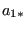
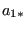

Keyword type: model definition, material
This option is used to define the conductivity coefficients of amaterial. There is one optional parameter TYPE. Default is TYPE=ISO,other values are TYPE=ORTHO for orthotropic materials and TYPE=ANISOfor anisotropic materials. All constants may be temperaturedependent. The unit of the conductivity coefficients is energy perunit of time per unit of length per unit of temperature.
First line:
Following line for TYPE=ISO:
Following line for TYPE=ORTHO:
Following line for TYPE=ANISO:
Example: *CONDUCTIVITY 50.,373. 100.,573.
tells you that the conductivity coefficient in a body made of this material is at
at  and
and  at . Below
at . Below  its value is setto
its value is setto  , above it is set to
, above it is set to  and in between linearinterpolation is applied.
and in between linearinterpolation is applied.
Example files: beamhtbo, oneel20fi.